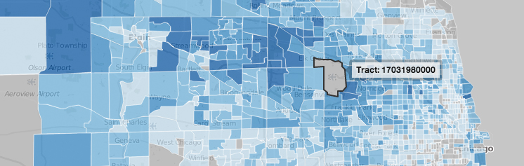

What is this?
Where we work is a map that shows where Chicagoans live and work.

Where people who work at the O'Hare airport live.
Click on any area of the map (each is a Census tract) and it will show you all the people who work there and where they live in blue. To see where all the people who live in that same tract and travel to other parts of the city for work, click the 'outbound workers' button on the left and it will show you those numbers in red.

The goal of this site is to help Chicagoans and city planners to indentify commute patterns to help inform their decisions. If you have a feature suggestion, let us know!
What's a census tract?
Census tracts are subdivisions of the United States determined by the U.S. Census Bureau that consist of 1,200 and 8,000 people. It is a unit of measure that typically follows contiguous area and stays consistent over time for the purposes of statistical population analysis. Read more on the Census website.
Each tract is identified with a uniquie FIPS code that also represents the state and county it belongs to.

Where did you get the data?
The data we use for this project comes from the US Census' Longitudinal Employer-Household Dynamics. You can download it yourself here.
Take a look at OnTheMap, a US Census project that also visualizes this data.
Code
This project is based on two components: an API to fetch the data, and this website to allow people to browse it.
LODES API
A simple python Flask app that serves up JSON data. Built by Eric.
Map
Built in pure HTML and Javascript for scalability. Built by Derek.
- Bootstrap 3 - HTML and CSS layouts
- Leaflet - for the interactive map
- Jenks natural breaks - for calculating the choropleth cutoffs
- jQuery address - for stateful URLs
Team and credits
This is a project by DataMade and Data Science for Social Good. We built this site for fun and education (ours and yours).
The team is:
- Eric van Zanten - Census LODES API
- Derek Eder - front end developer and designer
Contact us
Found a bug? Report it on our issue tracker.
Have a suggestion or feedback? Contact us at info@datamade.us